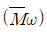
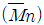
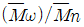
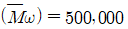
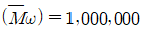
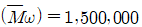
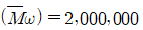

임산가공기사 (2019-04-27 기출문제)
1과목: 목재이학
1. 목재의 응력과 변형에 대한 설명으로 옳지 않은 것은?
- 비례한도 내에서 응력과 변형은 비례한다.
- 응력과 변형이 직선관계가 되는 구간을 비례한도라 한다.
- 비례한도는 Hook의 법칙이 성립되는 최소한의 응력치이다.
- 아주 낮은 응력이라도 어느 한도 이상의 하중을 계속 반복하면 목재가 피로해져 파괴된다.
(정답률: 알수없음)

2. 목재에서 서로 직교하는 3방향으로 이방성을 나타낸 것은?
- 등방성체
- 이방성체
- 면등방성체
- 직교이방성체
(정답률: 알수없음)
3. 목재의 수축 및 팽윤 이방성에 가장 적은 영향을 주는 것은?
- 점탄성
- 방사조직
- 조재 및 만재
- 피브릴경사각
(정답률: 알수없음)
4. 목재의 크리프에 대한 설명으로 옳지 않은 것은?
- 크리프 파괴는 크리프 한도롤 넘을 때 나타난다.
- 분율 크리프, 크리프 컴플라이언스, 비교 크리프 등이 있다.
- 일반적으로 크리프 곡선의 형상은 다른 조건이 일정할 때는 응력의 크기에 의존한다.
- 목ㅈ에 한 방향의 응력이 작용할 때의 점탄성을 동적점탄성이라 하며, 크리프 및 응력완화가 대표적이다.
(정답률: 알수없음)
5. 목재의 열전도도에 대한 설명으로 옳은 것은?
- 비중이 클수록 열전도도는 감소한다.
- 밀도가 작을수록 열전도도는 증가한다.
- 함수율이 높아질수록 열전도도는 증가한다.
- 온도가 상승함에 따라 열전도도는 감소한다.
(정답률: 알수없음)
6. 시험재의 초기중량이 1500g, 추정된 함수율이 50%일 때 전건중량은?
- 750g
- 1000g
- 1200g
- 1500g
(정답률: 알수없음)
7. 목재의 비열에 대한 설명으로 옳지 않은 것은?
- 비열은 단위질량당 열용량으로 표현할 수 있다.
- 균질인 물체의 열용량은 물체의 양에 비례하지 않는다.
- 열용량은 어떤 물체에 가해진 열을 상승한 온도차로 나눈 값으로 표현된다.,
- 일반적으로 물의 밀도가 목재의 전건 밀도보다 크기 때문에 전건 목재에 비해 상온에서 물의 비열이 훨씬 더 큰 값을 가진다.
(정답률: 알수없음)
8. 목재의 수분 흡착력에 대한 설명으로 옳지 않은 것은?
- 침엽수와 활엽수간에는 차이가 크다.
- 변재와 심재의 흡착력 차이는 매우 작다.
- 수종 감에 흡착력 크기는 거의 차이가 없다.
- 흡습량은 친수성기의 수에 의존하는 것이 일반적이다.
(정답률: 알수없음)
9. 전건비중이 0.40인 목재의 공극율은?
- 약 63%
- 약 73%
- 약 83%
- 약 93%
(정답률: 알수없음)
10. 음파가 목재에 흡수되는 정도는?
- 5~10%
- 10~20%
- 20~30%
- 30~40%
(정답률: 알수없음)
11. 목재의 탄성에 가장 적게 영향을 미치는 요인은?
- 옹이
- 함수율
- 변재의 색상
- 세포벽의 미세구조
(정답률: 알수없음)
12. 항온 항습실 내에서 장기간 조습시킨 함수율 15%인 목재의 치수는 2cm×25cm×10cm 중량은 300g일 때 목재의 비중은?
- 0.45
- 0.50
- 0.55
- 0.60
(정답률: 알수없음)
13. 목재의 평형함수율에 대한 설명으로 옳지 않은 것은?
- 온도와는 관계없다.
- 수종의 영향은 별로 받지 않는다.
- 대기 상태에서는 기건함수율이라고 한다.
- 상대습도와는 대단히 밀접한 관계가 있다.
(정답률: 알수없음)
14. 목재 내 수분 이동에 대한 설명으로 옳지 않은 것은?
- 섬유포화점 이상에서 자유수가 이동한다.
- 모세관 인력과 전압력 차에 따라 자유수가 이동한다.
- 수증기에 의한 확산 이동은 섬유포화점 이하에서 이루어진다.
- 결합수 이동은 세포 내 섬유포화점 이하에서 수분 경사에 의해 발생한다.
(정답률: 알수없음)
15. 목재의 비중에 대한 설명으로 옳은 것은?
- 일반적으로 세포벽의 비중은 2.6~3.0 정도이다.
- 진비중은 수종과 무관하게 일반적으로 2.0으로 사용한다.
- 세포벽비중 대 전비중의 비를 세포벽비라고 하며 실제값은 1보다 작다.
- 세포내강이나 세포벽 중의 미세한 공극을 완전히 제거한 목재실질의 비중을 가비중이라고 한다.
(정답률: 알수없음)
16. 목재의 밀도 및 비중에 영향을 끼치는 주요 인자로 옳지 않은 것은?
- 함수율
- 내음성
- 세포벽실질
- 추출물과 무기염류 함량
(정답률: 알수없음)
17. 목재의 잔광 현상에 대한 설명으로 옳지 않은 것은?
- 조재 및 만재에 따라 차이가 있다.
- 심재 및 변재에 따라 차이가 없다.
- 수지를 많이 함유한 목재가 강한 잔광을 유발한다.
- 세포벽 내의 리그닌 함유량은 잔광을 나타내는 중요한 요인이다.
(정답률: 알수없음)
18. 목재를 구성하는 세포와 세포와의 간극 및 세포의 내강에 유리상태로 존재하는 수분은?
- 결합수
- 흡착수
- 포화수
- 자유수
(정답률: 알수없음)
19. 목재의 변동률에 대한 설명으로 옳지 않은 것은?
- 참나무류 목재의 수축률은 작지만 변동률은 크다.
- 변동률이 작은 목재는 벽이나 마루판, 창틀, 보트 제작 등에 유리하다.
- 변동률은 수축률과 유사한 경향을 나타내고 있으나 반드시 일치하지는 않는다.
- 대기 상대습도와 온도의 일변화 또는 계절변화에 의한 목재의 치수변화를 말한다.
(정답률: 알수없음)
20. 목재의 화학적 조성분이 목재의 수축 및 팽윤에 관여하는 크기 순서로 올바르게 나열한 것은?
- 셀룰로오스>헤미셀룰로오스>리그닌
- 셀룰로오스>리그닌>헤미셀룰로오스
- 헤미셀룰로오스>리그닌>셀룰로오스
- 헤미셀룰로오스>셀룰로오스>리그닌
(정답률: 알수없음)
2과목: 목재해부학
21. 제재 작업자의 부주의에 의해 만들어지는 목리는?
- 사주목리
- 나선목리
- 파상목리
- 교착목리
(정답률: 알수없음)
22. 환공재에 해당하는 수종은?
- 벚나무
- 굴참나무
- 층층나무
- 버드나무
(정답률: 알수없음)
23. 활엽수재의 나선비후에 대한 설명으로 옳은 것은?
- 산공재에서는 볼 수 없다.
- 목섬유의 세포간층에 주로 발달한다.
- 주로 도관의 세포내강쪽 벽에 발달한다.
- 환공재에서는 주로 조재부의 도관에서 관찰된다.
(정답률: 알수없음)
24. 정상수지구가 존재하지 않는 수종은?
- 잣나무
- 향나무
- 소나무
- 일본잎갈나무
(정답률: 알수없음)
25. 활엽수재를 해부학적으로 식벽할 때 주요 조사 항목이 아닌 것은?
- 도관
- 가도관
- 목섬유
- 방사유세포
(정답률: 알수없음)
26. 침엽수재의 유연벽공이 가장 많이 보이는 세포는?
- 가도관
- 수지구
- 방사유세포
- 축방향유세포
(정답률: 알수없음)
27. 경사지에 생장한 수간의 횡단면 위쪽에 형성되는 이상재는?
- 수식재
- 취심재
- 압축응력재
- 인장응력재
(정답률: 알수없음)
28. 조재와 만재의 구분이 뚜렷하지 않은 수종은?
- 주목
- 소나무
- 은행나무
- 일본잎갈나무
(정답률: 알수없음)
29. 천공의 모양, 나선비후의 유무, 방사조직의 동성 혹은 이성을 관찰할 때 가장 적당한 단면은?
- 횡단면
- 판목면
- 접선단면
- 방사단면
(정답률: 알수없음)
30. 침엽수재에서 가도관의 평균 구성비율은?
- 50~68%
- 70~78%
- 80~88%
- 90~98%
(정답률: 알수없음)
31. 방사가도관의 배열에 대한 설명으로 옳은 것은?
- 도관의 주위에 잘 배열되어 있다.
- 방추형 방사조직과 직교하여 배열되어 있다.
- 침엽수 방사조직의 상하부위에 배열되어 있다.
- 목섬유와 함께 섬유방향으로 나란히 배열되어 있다.
(정답률: 알수없음)
32. 성숙재와 비교하였을 때 미성숙재에 대한 설명으로 옳은 것은?
- 만재율이 적다.
- 연륜폭이 좁고 비교적 균일하다.
- 위연륜이나 응력재의 출현이 적다.
- 죽은 옹이가 나타나거나 옹이가 없다.
(정답률: 알수없음)
33. 활엽수재를 구성하는 세포 요소 중에서 양분의 저장 기능을 가지고 있는 것은?
- 도관
- 목섬유
- 유세포
- 가도관
(정답률: 알수없음)
34. 고립관공만 존재하는 수종은?
- 뽕나무
- 옴나무
- 가시나무
- 느티나무
(정답률: 알수없음)
35. 활엽수재의 벽공실 안쪽에 전부 또는 일부가 2차벽에서 생성된 돌기물로 덮여 있는 벽공은?
- 맹벽공
- 분지벽공
- 유연벽공
- 베스쳐드 벽공
(정답률: 알수없음)
36. 활엽수제에서 방사조직이나 축방향의 목재구성 세포가 층계상으로 배열함으로써 나타나는 무늬는?
- 리플마크
- 포상문리
- 권모문리
- 수반문리
(정답률: 알수없음)
37. 세포벽에서 가장 두꺼운 층은?
- 1차벽
- 2차벽의 증층
- 2차벽의 외층
- 2차벽의 내층
(정답률: 알수없음)
38. 가장 두꺼운 벽의 에피델리얼 세포를 가지고 있는 수종은?
- 곰솔
- 소나무
- 잣나무
- 일본잎갈나무
(정답률: 알수없음)
39. 열대 활엽수재에 대한 설명으로 옳지 않은 것은?
- 대부분의 수종이 환공재이다.
- 취약심재를 가진 수종이 있다.
- 교착목리를 나타내는 수종이 흔하다.
- 온대산 재에는 분포하지 않는 실리카를 지니는 경우가 있다.
(정답률: 알수없음)
40. 세포내강이 좁고 세포벽이 비정상적으로 두꺼운 섬유로서 흡습성이 풍부하며, 인장이상재에 나타나는 목섬유는?
- 격막목섬유
- 젤라틴섬유
- 진정목섬유
- 섬유상가도관
(정답률: 알수없음)
3과목: 목재화학
41. 다음 중 침엽수 아황산 펄프공장의 폐액으로부터 얻을 수 있는 화합물은?
- 바닐린
- 벤젠
- 톨루엔
- 아세톤
(정답률: 알수없음)
42. 중량 평균 분자량

과 수평균 분자량
과의 비
가 2.0인 섬유소의 수평균 분자량이 500,000일 때, 중량 평균 분자량은?



(정답률: 알수없음)
43. 목분 중의 탄수화물을 가수분해하여 리그닌을 잔사로서 정량하려고 한다. 이 때 필요한 산의 종류와 농도로 적당한 것은?
- 72% (CH3CO)2 또는 30% HNO3
- 72% H2SO4 또는 42% HCI
- 80% CH3COOH 또는 10% HCI
- 72% HNO3 또는 10% CH3COOH
(정답률: 알수없음)
44. 다음 목재를 구성하는 원소 중에서 함량이 가장 낮은 것은?
- C(탄소)
- N(질소)
- H(수소)
- O(산소)
(정답률: 알수없음)
45. 다음 중 Hemicellulose를 구성하는 주요 단당류가 아닌 것은?
- Mannose
- Xylose
- Erythrose
- Glucose
(정답률: 알수없음)
46. 셀룰로오스의 이론상 가능한 최대 치환도(degree of substiution)는?
- 1
- 2
- 3
- 4
(정답률: 알수없음)
47. 목재의 홀로셀룰로오스로부터 레미셀룰로오스를 추출하려고 한다. 추출용 시약으로 가장 적합하지 않는 것은?
- H2SO4
- KOH
- DMSO
- HaOH
(정답률: 알수없음)
48. 다음 중 Lignan의 용도로서 옳은 것은?
- 살충제
- 항산화제
- 제초제
- 발근촉진제
(정답률: 알수없음)
49. 리그난(lignan)은 두 개의 모노리그놀이 결합한 것이다. 그 결합 형태를 바르게 나타낸 것은?
- a-a 결합을 한 diarylbutane 유도체
- a-β 결합을 한 diarylbutane 유도체
- β-β 결합을 한 diarylbutane 유도체
- β-γ 결합을 한 diarylbutane 유도체
(정답률: 알수없음)
50. 재생셀롤로오스인 레이온과 셀로판의 결정구조를 무엇이라고 하는가?
- 셀룰로오스Ⅰ
- 셀룰로오스Ⅱ
- 셀룰로오스Ⅲ
- 셀룰로오스Ⅳ
(정답률: 알수없음)
51. 목재를 구성하는 주요 원소는?
- Na, Ca, Li
- F, Cl, Pb
- H, O, C
- Ne, S, P
(정답률: 알수없음)
52. 다음 중 오탄당의 조합으로 맞는 것은?
- Xylose 와 Arabinose
- Mannse 와 Sucrose
- Maltose 와 Fructose
- Fructose 와 Galactose
(정답률: 알수없음)
53. 자일로오스를 산과 함께 가열하면 생성될 수 있는 화합물은?
- Xyloisosaccharinic acid
- Glucoisosaccharinic acid
- 2-furaldehyde(furfural)
- 4-O-methulglucuronic acid
(정답률: 알수없음)
54. 목재의 주요 헤미셀룰로오스인 자일란을 단리하려고 할 때 일반적으로 사용되는 시약은?
- 에탄올
- 메탄올
- 아세톤
- 수산화칼륨
(정답률: 알수없음)
55. 목재 헤미셀룰로오스의 구성당 중 자일로오스로부터 얻어질 수 있는 것은?
- 프라바노이드
- 콜레스테롤
- 자일리톨
- 톨유
(정답률: 알수없음)
56. 목재 중에 들어 있는 Diterpenoid로서 Turpentine을 증류하고 남은 것으로 Colophony 라고도 하는 물질의 명칭은?
- Rosin
- Pinene
- Flavone
- Tannin
(정답률: 알수없음)
57. 다음 중 소나무 수지(resin)의 주성분은?
- Gallic, acid, Ellagic acid
- Abietic acid, Pimaric acid
- α-pinene, β-pinene
- Palmitic acid, Stearic acid
(정답률: 알수없음)
58. 목재를 구성하는 다당류 중 갈락탄(galactan)이 가장 많이 분포하는 세포벽 층은?
- M + P(세포간층 + 1차벽)
- S1(2차벽 외층)
- S2(2차벽 중층)
- S3(2차벽 내층)
(정답률: 알수없음)
59. 다음 중 목재 리그닌의 관능기가 아닌 것은?
- 페놀성 수산기
- 메톡실기
- 수산기
- 아민기
(정답률: 알수없음)
60. 정유(essential oil)에 대한 설명으로 틀린 것은?
- 정유는 인류에 있어서 유용한 자원이다.
- 정유에는 살충성분을 갖는 것도 알려져 있다.
- 정유는 휘발성이 매우 낮다.
- 정유 중 가장 많이 사용되고 있는 것이 turpentine유(油)이다.
(정답률: 알수없음)
4과목: 임산제조학
61. 펄프 제조 과정에서 중해 작업 전에 실시하는 박피 작업에 대한 설명으로 옳지 않은 것은?
- 목재의 직경이 작을수록 수피율은 낮다.
- 펄프 원료인 섬유질이 매우 적어 불필요한 수피를 제거한다.
- 박피를 하지 않으면 중해 과정에서 화학 약품의 소비가 증가된다.
- 박피를 하지 않으면 펄프 내에 반점이 형성되어 품질이 저하된다.
(정답률: 알수없음)
62. 띠톱 제재기의 크기를 결정하는 것은?
- 띠톱의 두께
- 거차의 지름
- 송재차의 크기
- 대차의 레일 폭
(정답률: 알수없음)
63. 목재를 건조할 때 엔드 코팅을 하는 주요 목적은?
- 표면 경화 방지
- 내부 할렬 방지
- 표면 할렬 방지
- 목구 할렬 방지
(정답률: 알수없음)
64. 장망초지기에서 테이블 롤의 주요 기능은?
- 워터마크를 만든다.
- 종이의 강도를 높인다.
- 지질을 균질하게 만든다.
- 와이어를 지지하고 탈수를 촉진한다.
(정답률: 알수없음)
65. 수지처리 압축목재에 대한 설명으로 옳지 않은 것은?
- 강도적 성능은 비중에 비례하여 증가한다.
- 치수 안정성이 비처리 압축목재보다 양호하다.
- 합성수지 처리 목재에 비해 두께 방향의 치수 안정성이 양호하다.
- 경도는 목재-플라스틱 복합체의 완전침투처리 목재보다 증가한다.
(정답률: 알수없음)
66. 목재 건조 전의 초기 함수율이 50%, 평형함수율이 10%, 건조 중 함수율이 20%이면 증발 수분 잔존율은?
- 10%
- 25%
- 30%
- 40%
(정답률: 알수없음)
67. 눈메꿈(눈막이) 공정에 대한 설명으로 옳지 않은 것은?
- 마무리 도료의 침투성을 양호하게 하기 위한 공정이다.
- 전색제의 종류에 따라 수성, 유성, 합성수지 눈메꿈제로 구분한다.
- 보통 착색공정 다음에 적용하나 때로는 초벌칠 후에 적용하기도 한다.
- 목재 표면의 공극을 적당한 물질로 메워 평활한 표면을 만들기 위한 공정이다.
(정답률: 알수없음)
68. 제지 과정에서 사이징 처리 및 사이징제에 대한 설명으로 옳지 않은 것은?
- 내부 사이징제로 로진이 주로 사용된다.
- 사이징 처리 방법으로 표면 사이징법과 내부 사이징법이 있다.
- 내부 사이징은 초지기의 사이즈 프레스에 의한 방법이 가장 널리 이용된다.
- 셀룰로오스의 수산기와 에스테르를 형성하는 사이징제의 경우는 사이징 효과가 영구적이다.
(정답률: 알수없음)
69. 회전형 단편 절삭기(Rotary lathe)가 구비해야 할 조건이 아닌 것은?
- 안전 사고 예방을 위한 장치가 있어야 한다.
- 인력이 적게 들고 가급적 자동화되어야 한다.
- 원목 직경이 달라지더라도 절삭 속도가 일정해야 한다.
- 원목 직경이 달라지더라도 절삭각은 변동 되지 않아야 한다.
(정답률: 알수없음)
70. 종이의 도공에 대한 설명으로 옳지 않은 것은?
- 용매로 알코올을 사용한다.
- 분산제로 인산염을 사용한다.
- 접착제로 변성 전분, 카제인, 라텍스 등을 사용한다.
- 안료로 이산화티탄, 수산화알루미늄, 탄산칼슘, 카올린 등을 사용한다.
(정답률: 알수없음)
71. 목재의 당화 방법으로 농황산법이 아닌 것은?
- Peoria법
- Proder법
- 북해도법
- Giordani법
(정답률: 알수없음)
72. 집성재 제조용 원료 목재에 대한 설명으로 옳지 않은 것은?
- 비중이 높은 목재일수록 목부파단율은 감소된다.
- 수지나 정유를 다량 함유한 목재의 경우 접착이 잘 되지 않는다.
- 제재판의 함수율이 높을 경우 접착제 중의 용제의 확산을 방해한다.
- 코어(core)재로 사용하려는 목재를 건조 시 비틀림 정도는 크게 중요하지 않다.
(정답률: 알수없음)
73. 화학펄프를 염소 처리하여 표백할 때 가장 활발한 염소화 반응을 위한 pH 조건은?
- pH 0.5~1.5
- pH 2~2.5
- pH 3~5
- pH 5~7
(정답률: 알수없음)
74. 펄프의 착색에 관여하는 리그닌의 구조와 가장 거리가 먼 것은?
- 페닐 쿠마란 구조
- 방향족환에 공역한 2중 결합 구조
- 산화에 의한 퀴논 및 퀴논메타이드 구조
- 카테콜 구조에 형성된 금속 킬레이트 구조
(정답률: 알수없음)
75. 파티클보드에 대한 설명으로 옳지 않은 것은?
- 이방성이 없다.
- 폐기 목질재료 등을 이용해서 제조한다.
- 펄프용 칩 크기의 원료를 이용하여 제조한다.
- 목재의 결함인 휨, 할렬, 옹이, 부후 등이 제거된다.
(정답률: 알수없음)
76. 건조지력 증강제로 주로 사용되지 않는 것은?
- 양성 전분
- 식물성 검
- 폴리아크릴 아미드
- 요소-포름알데하이드 수지
(정답률: 알수없음)
77. 크라프트펄프 제조 시 증해 과정 및 결과에 영향을 미치는 주요 요인이 아닌 것은?
- 액비
- 증해 온도
- 황산 용액 사용량
- 목재 칩의 크기와 상태
(정답률: 알수없음)
78. 목탄에 대한 설명으로 옳지 않은 것은?
- 목탄의 경도는 대략 용적중에 비례한다.
- 생재 목탄은 기건재 목탄보다 용적증이 작다.
- 목탄의 착화 온도는 휘발 성분이 많으면 낮다.
- 탄화 온도가 높은 목탄일수록 착화 온도가 높다.
(정답률: 알수없음)
79. 요소소지 접착제에 대한 설명으로 옳지 않은 것은?
- 임의로 중량이 가능하다.
- 빛깔이 무색이거나 투명한 편이다.
- 경화 과정에서 용적 수축이 거의 없다.
- 옥내용 합판, 집성재, 파티클보드 제조 등에 사용된다.
(정답률: 알수없음)
80. 합판 접착 시 램의 지름이 50mm, 면적이 0.196m2인 1본을 열압기로 2m×2m 크기의 합판에 14.5kgf/cm2의 압력을 가하려고 할 때 유압 펌프의 게이지 압력은?
- 280.8kgf/cm2
- 295.9kgf/cm2
- 315.7kgf/cm2
- 337.8kgf/cm2
(정답률: 알수없음)
5과목: 목재보존학
81. 목재를 가해하는 해충에 대한 설명으로 옳지 않은 것은?
- 나무좀은 주로 건재를 가해한다.
- 바구미는 주로 습재를 가해한다.
- 가루나무좀은 주로 건재를 가해한다.
- 빗살수염벌레는 주로 건재를 가해한다.
(정답률: 알수없음)
82. 방부 처리를 하는데 가압 주입 방법이 아닌 것은?
- 침지법
- 뤼핑법
- 공세포법
- 로우리법
(정답률: 알수없음)
83. 단판 길이 방향의 팽윤을 감소시켜 측면 팽윤을 억제하는 공정으로 가장 적합한 것은?
- 직교적층
- 가교결합
- 피복 처리
- 용적 처리
(정답률: 알수없음)
84. 목재 변색균의 방지 대책으로 옳지 않은 것은?
- 수입된 소나무는 물 속에 저장한다.
- 생재의 경우 건조하지 않는 것이 좋다.
- 벌채 후 야적할 경우 곧바로 박피를 한다.
- 비를 피할 수 있으며 통풍이 잘 되는 곳에 잔적한다.
(정답률: 알수없음)
85. 수용성 방부제가 아닌 것은?
- 불소 화합물
- 붕소 화합물
- 클로로페놀계
- 구리ㆍ아연ㆍ크롬계
(정답률: 알수없음)
86. 수용성 방부제에 해당하는 것은?
- 크레오소트유 방부제
- 지방산 금속염계 방부제
- 유기요로드 화합물계 방부제
- 산화크롬ㆍ구리 화합물계 방부제
(정답률: 알수없음)
87. 목재의 방부ㆍ방충처리 기준에서 사용환경 범주 H4에 사용할 수 없는 목재방부제는?
- A
- ACQ
- CuAz
- IPBCP
(정답률: 알수없음)
88. 방부처리 작업장에서 고농도 오염구역에 해당하지 않는 것은?
- 주약관
- 저장 탱크
- 용해 탱크
- 양생 촉진 시설
(정답률: 알수없음)
89. 목재의 연부후를 발생시키는 균의 분류학적 위치는?
- 방선균
- 접합균
- 자낭균
- 담자균
(정답률: 알수없음)
90. 구리ㆍ알킬암모늄 화합물계 방부제에 대한 설명으로 옳은 것은?
- CCA보다 비용이 비싸다.
- 방부처리 시 냄새가 없다.
- 토양에 접촉하는 곳에서는 사용할 수 없다.
- 비소나 크롬과 같은 중금속을 포함되어 유독하다.
(정답률: 알수없음)
91. 목재의 방화제 성분으로 가장 부적합한 것은?
- 벤젠
- 금속염
- 암모늄염
- 알칼리염
(정답률: 알수없음)
92. 목재부휴균으로 인한 목재의 열화에 대한 설명으로 옳지 않은 것은?
- 백색부휴균은 리그닌이 풍부한 세포간층을 우선 분해한다.
- 갈색부후균은 셀룰로오스가 풍부한 1차벽을 우선 분해한다.
- 부후재의 조직 중 최초로 명확한 변화를 나타내는 것은 방사조직이다.
- 부후 초기의 목재 변색은 부후균이 분비하는 효소와 목재의 페놀성 물질과의 반응에 의해 나타나는 현상이다.
(정답률: 알수없음)
93. 목재의 열화에 대한 설명으로 옳은 것은?
- 발생 원인은 단순하며 종합적이지 않다.
- 주로 화재에 의한 목재의 피해를 말한다.
- 미생물이나 충류에 의한 생물열화만을 말한다.
- 목재 사용 중 환경 조건에 따라 물리적 및 화학적 성능이 저하되어 저분자 물질로 분해ㆍ변질 소모되는 현상이다.
(정답률: 알수없음)
94. 목재의 연소성에 대한 설명으로 옳지 않은 것은?
- 온도가 상승하여 350~450℃가 되면 목재는 자연 착화된다.
- 목재에 수분이 없는 상태에서 100℃를 넘어가면 열분해가 이루어진다.
- 목재가 연소되는 위험온도는 260℃이며 목재 방화의 기준 온도가 된다.
- 목재가 공기 중의 산소와 화학 반응하여 열과 빛을 내고 타는 산화 현상을 말한다.
(정답률: 알수없음)
95. 방부 처리 방법으로 충세포법에 대한 설명으로 옳은 것은?
- 상압처리법에 속한다.
- 공기를 압입한 후 가압하는 처리법이다.
- 후배기 때에만 10분간 진공 처리를 한다.
- 악제 주입이 잘 되지 않은 수종을 처리하는데 사용한다.
(정답률: 알수없음)
96. 목재를 방충 처리하는데 가장 적절한 화합물은?
- 동 화합물
- 붕소 화합물
- 아연 화합물
- 크롬 화합물
(정답률: 알수없음)
97. 박피하지 않는 생재 상태에서 목재를 벌채현장에서 보존 처리하는 방법으로 가장 적당한 것은?
- 확산법
- 베델법
- 부셰리법
- 오스모스법
(정답률: 알수없음)
98. 목재의 방염 작용에 해당되지 않은 것은?
- 열 작용
- 방진 작용
- 피복 작용
- 결합 작용
(정답률: 알수없음)
99. 뉴질랜드에서 수입하는 라디에타소나무재가 토양에 접촉되는 토목용으로 사용될 경우 예상 내용 연소가 가장 짧은 것은?
- 뤼핑법
- 충세포법
- 표면처리법
- 감압주입법
(정답률: 알수없음)
100. 목재 방부처리 시 확산법에 가장 적합한 약제는?
- PCP
- 클로르덴
- 붕산나트륨염
- 크레오소오트
(정답률: 알수없음)
비례한도는 Hook의 법칙이 성립되는 최소한의 응력치입니다. Hook의 법칙은 응력과 변형이 비례한다는 것을 말합니다. 따라서 비례한도 내에서는 응력과 변형이 비례하며, 이 구간을 비례한도라고 합니다. 그러나 비례한도를 넘어서면 목재는 탄성 한계를 초과하게 되어 변형이 비례하지 않게 됩니다. 이때부터는 목재가 피로해져 파괴될 가능성이 높아집니다.